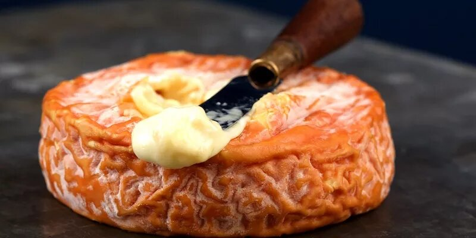
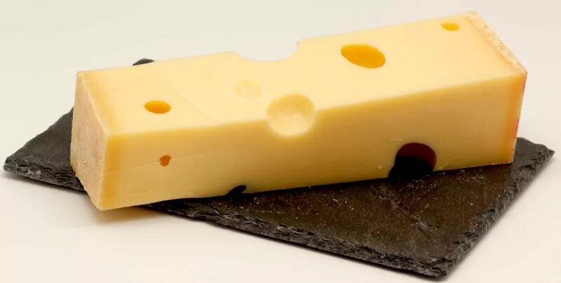

Camembert is one of the first cheeses we associated with France, so it's no wonder it tops the list at number one. This cheese hails from Normandy, the northwestern tip of France where plentiful rain, gentle sun, and humidity produce the nutritious grass on which the Normandy cows feed. The milk is the foundation for the famous Normandy butter, cream, and its noble cheeses Pont l'Évêque, Livarot, and Camembert (the latter achieving AOC status in 1983).
The way to judge a Camembert is by its shape, aroma, texture and taste. The shape should be intact and the rind covered in white mold. The interior should be creamy and supple and give slightly to the pressure of your fingers. The aroma should be slightly moldy and the taste full-bodied and salty.
Époisses de Bourgogne

This was one of Napoleon's favorite cheeses and he enjoyed it with his favorite Burgundy wine, Chambertin. It's a strong-smelling cheese with the aroma of marc (brandy) and the flavors of salt, sweet, metal, and cream. If you can find it, buy the artisanal cheese made in the village of Gevrey-Chambertin in Burgundy.
Abondance

The mountain cheeses from the Haute Savoie region of the Rhone-Apes are made from breeds of cows with great French names — like the Abondance, Montbeliard, and Tarine breeds — and with strict rules surrounding how the animals must be fed. Abondance is made in Alpine chalets and has a strong aroma with a complex flavor and a balance of acidity with a long aftertaste. The crust, including the grey layer beneath should be removed before consuming.
Do watch the video to learn more about differnt types of cheeses in France